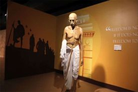
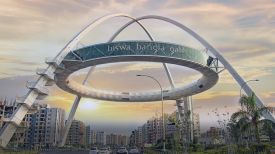
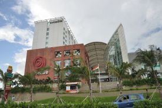
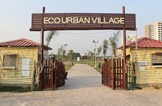

Do Visit
Eco-Park
New Town’s Eco-Park, spread over a 480-acre area, presents an opportunity to create an urban community that values nature as an essential part of the quality of life. The inspiration and enjoyment that one gets from being close to nature cannot
be denied. The benefits to physical and mental health are well known. However, such ecosystems provide cities with services that are critical to good urban functioning, which is even more important in an urban setting.
Tap the image for
details.👆 Tap for location

Mother's Wax-Museum
To make New Town distinguishably highlighted in the Tourist Map of India, it has been conceived to establish a WAX MUSEUM in the city. The 6th and 5th floor of an asset, (WBHIDCO), situated just opposite the Central Gate of the Eco Park, was identified
for establishing this WAX MUSEUM. The 6th and 5th Floor of Finance Centre is around 26000 Sq.ft of an area dedicated to the Mother’s WAX Museum.
Tap the image for details.👆 Tap for location

Biswa Bangla Gate
Biswa Bangla Gate, popularly known as Kolkata Gate, is the new icon of a rising Bengal, the same way London Eye is for the UK and Eiffel Tower is for Paris.
Tap the image for details.👆 Tap for location
Near Us 

City Centre, New Town
City Centre, New Town is positioned not merely as a shopping location but as a complete and multi-facility family destination. So, it is not just a preferred choice for select individuals but a place where every member of the family would
like to go whenever there is time.
Tap the image for
details.👆 Tap for location

Eco Urban Village
A village within an urban setting, offering a taste of rustic delights to the visitors, New Town Kolkata’s Eco Urban Village is a gust of fresh air amidst the humdrum of city life. The picnic experience offered by Eco Urban Village has been deliberately
planned to be quite different from that of Eco Park. Opened on 24th December 2014, New Town’s Eco Urban Village has remained a picnickers’ paradise.
Tap the image for details.👆
Tap for location